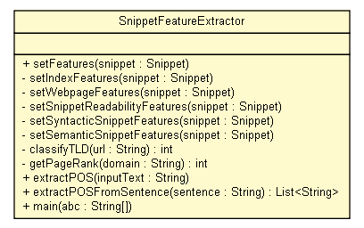

tud.iir.extraction.snippet
Class SnippetFeatureExtractor

java.lang.Object
 tud.iir.extraction.snippet.SnippetFeatureExtractor
tud.iir.extraction.snippet.SnippetFeatureExtractor
public class SnippetFeatureExtractor
- extends java.lang.Object
Given a snippet and its originating webresult, a feature vector is generated.
| Methods inherited from class java.lang.Object |
clone, equals, finalize, getClass, hashCode, notify, notifyAll, toString, wait, wait, wait |
SnippetFeatureExtractor
public SnippetFeatureExtractor()
setFeatures
public static void setFeatures(Snippet snippet)
setIndexFeatures
private static void setIndexFeatures(Snippet snippet)
setWebpageFeatures
private static void setWebpageFeatures(Snippet snippet)
setSnippetReadabilityFeatures
private static void setSnippetReadabilityFeatures(Snippet snippet)
setSyntacticSnippetFeatures
private static void setSyntacticSnippetFeatures(Snippet snippet)
setSemanticSnippetFeatures
private static void setSemanticSnippetFeatures(Snippet snippet)
classifyTLD
private static int classifyTLD(java.lang.String url)
getPageRank
private static int getPageRank(java.lang.String domain)
extractPOS
public static void extractPOS(java.lang.String inputText)
extractPOSFromSentence
public static java.util.List<java.lang.String> extractPOSFromSentence(java.lang.String sentence)
main
public static void main(java.lang.String[] abc)